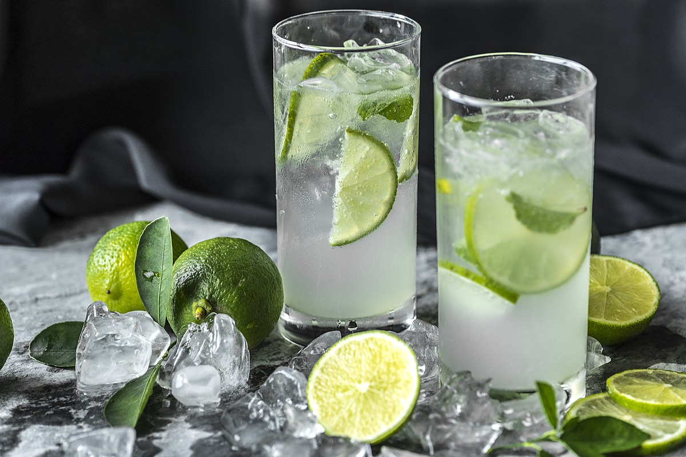

Caipirinha is Brazil's national cocktail. It's so refreshing and delicious! Ask your liquor store to order cachaça for you if they don't stock it –– there's no substitute.

Prep time: 5 mins
Servings: 1 serving
Ingredients
1/2 lime, quartered
1 teaspoon of white sugar
2 1/2 fluid ounces of cachaça (Bazilian rum)
1 cup of ice cubes
Directions
Squeeze and drop lime wedges into a large rock glass. Add sugar and muddle until juices release.